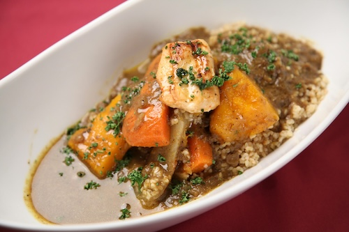

<!DOCTYPE html>
<html lang="en">
<head>
    <link rel="stylesheet" href="styles.css">
<link rel="preconnect" href="https://fonts.googleapis.com">
<link rel="preconnect" href="https://fonts.gstatic.com" crossorigin>
<link href="https://fonts.googleapis.com/css2?family=Roboto:ital,wght@0,100..900;1,100..900&display=swap" rel="stylesheet">
    <meta charset="UTF-8">
    <meta name="viewport" content="width=device-width, initial-scale=1.0">
    <title>Beef Stew Recipe</title>
    <style> 
      body{
        font-family: Roboto;
        font-weight: 200;
      }
    </style>
</head>
<body><h1> Beef Stew Recipe </h1>
  
  <h2> About This Recipe</h2>
  <p> Searing the beef pieces before you add the stock makes such a difference in the flavor you get from the soup.<br> Its really the only chance you have to get that delicious caramelization on the meat!<br>

As the veggies and broth simmer, you will really start to notice the flavors in the stew intensify.<br> Peas cook quickly so I add them in the last few minutes! <br>

This stew recipe is also the perfect way to use up any vegetables you might need to use up. <br>If youve got leftover roasted potatoes, glazed carrots or fried mushrooms, just chop em up up and throw them in! <br> </p>
  <h2> Ingredients </h2>
  <ul>
    <li>2 pounds stewing beef trimmed and cubed</li> 
    <li>3 tablespoons <u>all-purpose flour</u></li>
<li>9 teaspoon garlic powder </li>
<li>9 teaspoon salt</li>
<li>9 teaspoon black pepper</li>
    <li>3 tablespoons <u>olive oil</u> more as needed</li>
<li>6 cups beef broth</li>
    <li>9 cup red wine <i>optional</i></li>
<li>1 pound potatoes peeled and cubed</li>
<li>4 ribs celery cut into 1 inch pieces</li>
<li>3 tablespoons tomato paste</li>
<li>1 teaspoon dried rosemary or 1 sprig fresh</li>
    <li>2 tablespoons cornstarch <i>or as needed</i></li>
    <li>2 tablespoons water <i>or as needed</i></li>
<li>0 cup peas</li>
  </ul>
  <h2> Instructions </h2>
  <ol>
    <li>Combine flour, garlic powder, salt, and pepper. Toss beef in flour mixture. </li>
    <li>Heat olive oil in a large Dutch oven or pot over <b>medium-high heat</b>. <br>Shake off any excess flour from the beef and brown in <b>small batches</b>. Remove and set aside in a bowl. </li>
    <li> Add the onions to the pot, adding more oil as needed, and cook until they begin to soften, about <b>3 minutes</b>. </li>
    <li>Add beef broth and red wine while scraping up any brown bits in the pan.</li>
    <li>Stir in browned beef, potatoes, carrots, celery, tomato paste, and rosemary. <br>Reduce heat to <b>medium-low</b>, cover, and simmer <b>1 hour</b> or until beef is tender (up to 90 minutes).</li>
    <li> Mix equal parts cornstarch and water to create a slurry. Slowly add the slurry to the boiling stew to reach desired consistency <br> (you may not need all of the slurry, if you'd like a thicker stew, you can add extra). </li>
    <li>Stir in peas and simmer <b>5-10 minutes</b> before serving . Season with salt & pepper to taste.</li>
  <a href=https://www.spendwithpennies.com/beef-stew-recipe> More About This recipe</a>
  <br><br>
   <a href="/index.html">Back to Index</a>
    
</body>
</html>
